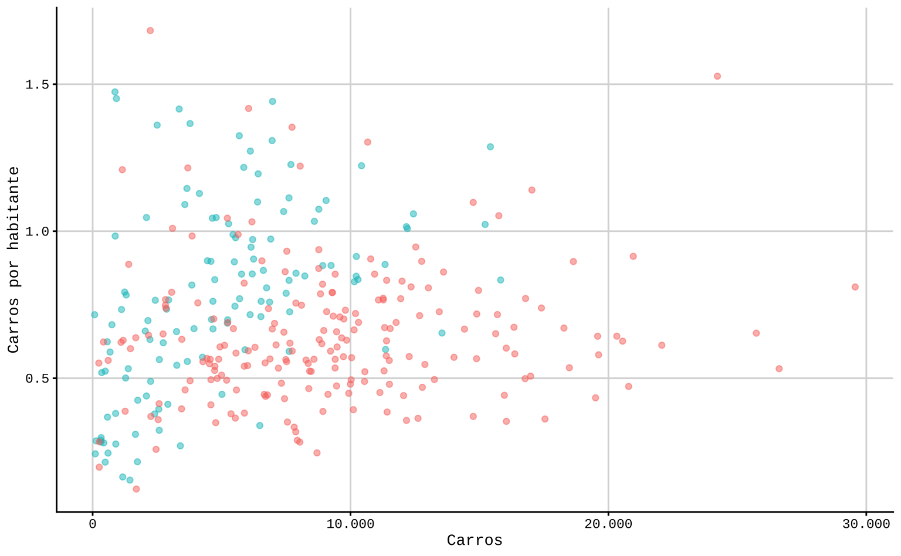
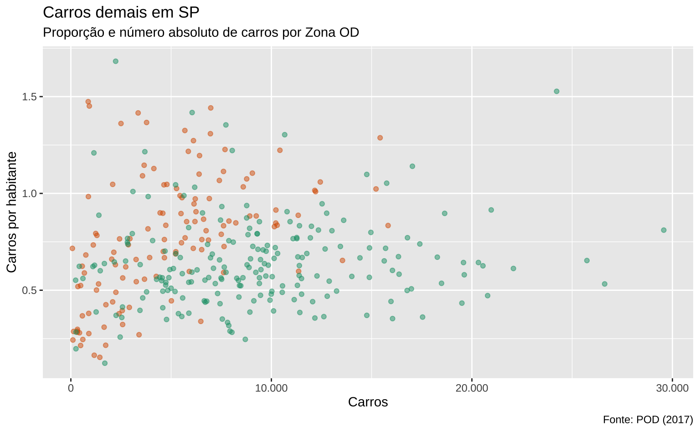

library(sysfonts)
library(showtext)Introdução
Este post encerra a discussão de elementos “estéticos” de gráficos. Primeiro apresento, brevemente, uma discussão sobre tipografias e como utilizar fontes em gráficos de ggplot2. Depois, entro numa discussão mais detalhada sobre a função theme, que controla todos os aspectos “temáticos” do gráfico, isto é, todos os aspectos que não envolvem diretamente algum dado: o tamanho do título, a posição da legenda, a cor do fundo, etc.
Este é talvez o post mais burocrático de todos. A função theme permite um controle fino sobre o gráfico, mas exige instruções igualmente detalhadas. Assim, o código, em termos de linhas, começa a crescer muito. Um simples gráfico de linhas, que podia ser feito em 5 ou 6 linhas, torna-se uma tarefa complexa, que pode ultrapassar 50 linhas de código. O lado positivo disto é que estas configurações podem então ser replicadas em múltiplos gráficos. Isto não é apenas um ganho estético, mas também permite padronizar a identidade visual dos gráficos.
Assim, o esforço de customizar o gráfico é feito uma única vez e depois pode ser replicado em todos os gráficos subsequentes.
Fontes
A tipografia desempenha um papel fundamental na eficácia da visualização de dados. Neste post anterior, vimos diferentes formas de como integrar texto num gráfico; também vimos, brevemente como utilizar diferentes tipografias/fontes no R. De maneira geral, há três opções para usar fontes no R1: usando (1) extrafont, (2) showtext e (3) ragg. Neste post vou mostrar como usar fontes usando showtext.
A escolha da fonte deve ser guiada pelo contexto, audiência e metas da visualização de dados, visando a eficácia na comunicação. Não há uma fonte universalmente ideal. Dito isso, acho que vale a pena se ater a um pequeno conjunto de fontes que, tradicionalmente, funcionam bem. Fontes como Helvetica, Futura, Arial e Roboto são amplamente utilizadas porque atendem a vários critérios técnicos, que garantem que estas fontes sejam legíveis, acessíveis e agradáveis ao olhar humano.
Em muitos contextos, a escolha da fonte é uma prerrogativa editorial da publicação ou faz parte da identidade de marca da empresa ou instituição. Nestes casos, a escolha da fonte é imediata.
A maneira simples de conseguir fontes é baixando elas do Google Fonts. O Google Fonts oferece mais de 1500 fontes diferentes. Não acho que vale a pena olhar ou testar todas. Abaixo segue uma pequena lista de fontes populares, muitas das quais já usei pessoalmete:
- Lato
- Montserrat
- Roboto e Roboto Condensed
- PT Serif
- Noto Sans
- Open Sans
- Source Serif Pro
- Questrial
- Fira Sans ou Source Code Pro
- Oswald
A fonte deste blog é a Questrial, enquanto os códigos são escritos com Fira Code.
A única potencial desvantagem de usar uma fonte popular é que a sua escolha de tipografia não vai chamar atenção. Em muitos casos isto não é propriamente uma desvantagem já que enfatiza o conteúdo sobre a forma. Certamente, existe um argumento de que muitas empresas e publicações estão usando as mesmas fontes como Roboto e Helvetica a ponto disto tornar-se monótono. Novamente, não acha que seja um problema utilizar uma fonte popular e, na maior parte dos casos, uma fonte como Roboto é quase que objetivamente a escolha certa a se fazer.
Fontes populares com Helvetica, Arial, Times New Roman, etc. costumam vir junto com o seu sistema operacional. Abaixo segue uma listinha com algumas fontes populares que gosto de usar.
- Arial
- Helvetica / Helvetica Neue
- Futura
- Calibri
- Georgia
- Verdana
- Century Gothic
- Cambria
- Palatino
- Garamond
- Tahoma
- Franklin Gothic
- Myriad Pro
- Avenir
- Times New Roman
Particularmente, sou um grande fã de Helvetica2.

Fontes no R
Para adicionar fontes em gráficos vamos utilizar o pacote showtext.
No código abaixo eu importo a fonte Montserrat.
font_add_google("Montserrat", "Montserrat")O gráfico abaixo mostra como ficam as letras.
#> Carrega as fontes
showtext_auto()
dat <- expand.grid(x = 1:5, y = 6:1)
dat$z <- c(letters, 1, 2, 3, 4)
ggplot(dat, aes(x = x, y = y, label = z)) +
geom_text(family = "Montserrat") +
theme_void()No segundo exemplo mostro como adicionar a fonte Helvetica. Neste caso, será necessário que a fonte esteja instalada em seu computador.
font_add("Helvetica", "Helvetica.ttc")ggplot(dat, aes(x = x, y = y, label = z)) +
geom_text(family = "Helvetica") +
theme_void()Na seção seguinte mostro como utilizar estas fontes em outras partes do gráfico.
Temas
Os elementos estéticos não relacionados com dados são os elementos “temáticos” do gráfico, controlados pela função theme. Exemplos de elementos temáticos incluem: linhas de grade, margem do gráfico, fonte do título, cor do fundo, etc. Há três elementos centrais que servem para construir estas escolhas temáticas, mas há quatro funções:
element_line: controla as linhas do gráfico. Em geral, serve para ajustar as linhas de grade que ficam no fundo do gráfico.element_rect: controla os elementos retangulares do gráfico. Em geral, serve para ajustar o fundo do gráfico e seu contorno.element_text: controla os elementos textuais do gráfico. Em geral, serve para alterar configurações do título, subtítulo e título dos eixos.element_blank: serve para suprimir algum elemento temático do gráfico.
São quatro os principais elementos temáticos de um gráfico: fundo, eixos, legenda e margens. Para modificar qualquer elemento temático, usa-se a função theme.
A imagem abaixo, de Henry Wang, é uma boa referência de todos os elementos temáticos de um gráfico de ggplot23.

Antes de entrar nos detalhes da função theme vale começar com os temas “completos”. Estas funções acompanham os pacotes ggplot2 e ggthemes e aplicam um tema completo sobre um gráfico.
Temas completos
Um tema completo é um conjunto de especificações temáticas que pode ser aplicado diretamente num gráfico. É a opção mais simples e direta de customização: no exemplo abaixo aplico o tema minimalista usando theme_minimal().
O gráfico abaixo usa a mesma base da Pesquisa Origem e Destino (POD) do post anterior e mostra o número absoluto de carros no eixo-x e o número de carros por domicílio no eixo-y.
#> Importa os dados limpos da Zona OD.
pod <- readr::read_csv(
"https://github.com/viniciusoike/restateinsight/raw/main/posts/ggplot2-tutorial/table_pod.csv"
)
#> Seleciona apenas zonas de São Paulo com população acima de zero
pod <- dplyr::filter(pod, code_muni == 36, pop > 0)ggplot(pod, aes(x = cars, y = car_rate)) +
geom_point(aes(color = as.factor(is_cbd)), alpha = 0.5) +
scale_color_brewer(type = "qual") +
theme_minimal()O tema theme_minimal já vem carregado no pacote ggplot2. Abaixo mostro alguns temas diferentes aplicados ao mesmo gráfico. Para não sobrecarregar a visualização eu omito a legenda.
base_plot <- ggplot(pod, aes(x = cars, y = car_rate)) +
geom_point(aes(color = as.factor(is_cbd)), alpha = 0.5) +
scale_x_continuous(labels = scales::label_number(big.mark = ".")) +
scale_color_brewer(type = "qual", palette = 2) +
guides(color = "none") +
labs(x = "Carros", y = "Carros por habitante")
#> Tema "clássico" padrão
base_plot + theme_classic()
#> Tema preto e branco padrão
base_plot + theme_bw()
#> Tema claro padrão
base_plot + theme_light()
#> Tema completamente vazio (útil para mapas)
base_plot + theme_void()
O pacote ggthemes traz algumas funções theme_* adicionais. Além disso, ele também traz escalas de cores, que combinam com estes temas.
library(ggthemes)No exemplo abaixo uso theme_pander e scale_color_pander em conjunto.
ggplot(pod, aes(x = cars, y = car_rate)) +
geom_point(aes(color = as.factor(is_cbd)), alpha = 0.5) +
scale_x_continuous(labels = scales::label_number(big.mark = ".")) +
guides(color = "none") +
labs(title = "Pander", x = "Carros", y = "Carros por habitante") +
scale_color_pander() +
theme_pander()Novamente, os gráficos abaixo mostram algumas das opções disponíveis no pacote ggthemes. Estes temas “imitam” algumas publicações famosas como The Economist e FiveThirtyEight. Há também temas que imitam a identidade visual de “softwares” estatísticos como Stata, Excel, Google Docs, etc.
base_plot <- ggplot(pod, aes(x = cars, y = car_rate)) +
geom_point(aes(color = as.factor(is_cbd)), alpha = 0.5) +
scale_x_continuous(labels = scales::label_number(big.mark = ".")) +
guides(color = "none") +
labs(x = "Carros", y = "Carros por habitante")
#> Tema que imita a The Economist
base_plot + scale_color_economist() + theme_economist()
#> Tema que imita o Excel
base_plot + scale_color_excel_new() + theme_excel_new()
#> Tema que imita o Google Docs
base_plot + scale_color_gdocs() + theme_gdocs()
#> Tema que imita o FiveThirtyEight
base_plot + scale_color_fivethirtyeight() + theme_fivethirtyeight()
Há também outros pacotes que exportam escalas e temas pré-definidos. O pacote hrbrthemes, por exemplo, oferece boas opções e já traz algumas tipografias como Roboto Condensed e Arial. Para conhecer mais sobre o pacote consulte o seu repositório no GitHub. Acredito que os temas deste pacote funcionam bem para contextos formais em geral, sejam acadêmicos ou empresariais.
library(hrbrthemes)
base_plot +
hrbrthemes::scale_color_ft() +
hrbrthemes::theme_ft_rc()
Outro pacote interessante é o cowplot, que oferece uma visualização simples e limpa. Acredito que o tema funciona bem para publicações acadêmicas em geral.
library(cowplot)
base_plot +
cowplot::theme_half_open(font_size = 10, font_family = "mono") +
cowplot::background_grid()Os elementos principais
Para entender como estes temas são construídos precisa-se entender os elementos temáticos do gráfico em maiores detalhes. São quatro os principais elementos temáticos de um gráfico: fundo, eixos, legenda e margens.
Nas próximas seções vamos explorar estes elementos.
Fundo
Por “fundo” quer-se dizer tudo o que fica atrás do gráfico principal. Num gráfico, temos dois “fundos”: o fundo do gráfico como um todo (plot.background) e o fundo do “painel” onde fica o gráfico (panel.background).
O exemplo abaixo tenta mostrar a diferença entre estes dois “fundos”. Aqui, as cores seguem o mesmo padrão de geom_col, o argumento color define a borda do objeto enquanto fill define a cor que preenche o objeto. Como fundo do gráfico coloquei uma margem azul espessa e um preenchimento em cinza-escuro (gray40). Como fundo do painel coloquei um “off-white” e uma linha de contorno escura (gray10).
ggplot(pod, aes(x = cars, y = car_rate)) +
geom_point(aes(color = as.factor(is_cbd)), alpha = 0.5) +
guides(color = "none") +
theme(
plot.background = element_rect(
fill = "gray40",
color = "blue",
linewidth = 5),
panel.background = element_rect(
fill = "#f8f8f8",
color = "gray10"
)
)
As linhas de grade também compõem o fundo do gráfico. Estas linhas são úteis para relacionar as observações no gráfico com os valores destacados nos eixos. O excesso de linhas de grade, contudo, pode poluir um gráfico.
As linhas de grade são controladas por element_line e muitos dos argumentos seguem a lógica de geom_line. Isto é, pode-se modificar o tipo de linha com linetype ou a espessura da linha com linewidth.
No exemplo abaixo, novamente, exagero nos argumentos para exemplificar algumas das possibilidades. As linhas “principais” que saem diretamente dos valores destacados no eixo são controladas via panel.grid.major; as linhas “intermediárias”, panel.grid.minor.
ggplot(pod, aes(x = cars, y = car_rate)) +
geom_point(aes(color = as.factor(is_cbd)), alpha = 0.5) +
guides(color = "none") +
theme(
panel.grid.major = element_line(
color = "gray10",
linetype = 2
),
panel.grid.minor = element_line(
color = "red",
linetype = 3
)
)Para omitir qualquer elemento temático usa-se element_blank. No caso abaixo, elimina-se as linhas de grade intermediárias.
ggplot(pod, aes(x = cars, y = car_rate)) +
geom_point(aes(color = as.factor(is_cbd)), alpha = 0.5) +
guides(color = "none") +
theme(
panel.grid.major = element_line(
color = "gray50",
linetype = 1
),
panel.grid.minor = element_blank()
)Eixos
Por eixos, quer-se dizer não somente os elementos textuais nos eixos x e y, mas também os elementos textuais adicionais (título, subtítulo e caption4).
Os eixos são um elemento temático bastante complexo. No post anterior, vimos como controlar alguns dos aspectos dos eixos usando funções scale. A função theme como mencionado diversas vezes permite um controle detalhado dos elementos temáticos. Para exemplificar o seu uso vamos começar com um gráfico cheio de elementos textuais.
base_plot <- ggplot(pod, aes(x = cars, y = car_rate)) +
geom_point(aes(color = as.factor(is_cbd)), alpha = 0.5) +
scale_x_continuous(labels = scales::label_number(big.mark = ".")) +
scale_color_brewer(type = "qual", palette = 2) +
guides(color = "none") +
labs(
x = "Carros",
y = "Carros por habitante",
title = "Carros demais em SP",
subtitle = "Proporção e número absoluto de carros por Zona OD",
caption = "Fonte: POD (2017)"
)
base_plotVamos começar trocando a fonte, cor e tamanho do título do gráfico. Note que é necessário ter a fonte Montserrat carregada, o que pode ser feito usando font_add_google("Montserrat", "Montserrat") como visto acima.
base_plot <- base_plot +
theme(
plot.title = element_text(
family = "Montserrat",
size = 20,
color = "gray10")
)
base_plot
Há dois elementos temáticos que compõem os eixos x e y. Temos o título do eixo (“Carros por habitante”) e o texto do eixo (“0.5”, “1.0”, “1.5”). Para modificar o primeiro usa-se axis.title e para modificar o segundo, axis.text. Estes elementos temáticos são replicados em ambos os eixos; contudo, se for necessário maior controle têm-se os elementos axis.title.x, axis.title.y, axis.text.x e axis.text.y.
No exemplo abaixo eu deixo o título dos eixos em Roboto Condensed em negrito, tamanho 12, e em cinza-escuro. Já o texto dos eixos fica em Raleway, tamanho 10, num tom mais claro de cinza.
base_plot <- base_plot +
theme(
axis.title = element_text(
family = "Roboto Condensed",
face = "bold",
size = 12,
color = "gray10"
),
axis.text = element_text(
family = "Raleway",
size = 10,
color = "gray40"
)
)Por fim, falta apenas o subtítulo e o caption do gráfico. Note como uso hjust = 0 para alinhar o caption à esquerda. Outra opção seria hjust = 0.5 (centralizar) ou hjust = 1 (à direita).
base_plot +
theme(
plot.subtitle = element_text(size = 10, color = "gray50"),
plot.caption = element_text(size = 8, hjust = 0, color = "gray50")
)
Uma maneira mais sã de utilizar estes argumentos é definindo uma mesma fonte para o gráfico inteiro. Aqui é importante notar que os elementos temáticos “herdam” argumentos. Para modificar todos os elementos textuais de um gráfico, por exemplo, pode-se modificar apenas text = element_text() e title = element_text(). A partir disto pode-se modificar os demais elementos introduzindo exceções à regra geral.
base_plot +
theme(
text = element_text(family = "Montserrat", size = 10),
title = element_text(size = 8, color = "gray50"),
plot.title = element_text(
size = 20,
color = "gray10"
),
axis.title = element_text(
face = "bold",
size = 12,
color = "gray10"
),
axis.text = element_text(
color = "gray40"
)
)
Legenda
base_plot <- ggplot(pod, aes(x = cars, y = car_rate)) +
geom_point(aes(color = as.factor(is_cbd)), alpha = 0.5) +
scale_x_continuous(labels = scales::label_number(big.mark = ".")) +
scale_color_brewer(
type = "qual",
palette = 2,
name = "Dentro do CE?",
labels = c("Não", "Sim")
) +
labs(
x = "Carros",
y = "Carros por habitante",
title = "Carros demais em SP",
subtitle = "Proporção e número absoluto de carros por Zona OD",
caption = "Fonte: POD (2017)"
)
base_plotO código abaixo mostra a maior parte das modificações que pode-se fazer com a legenda.
base_plot +
theme(
legend.position = "bottom",
legend.background = element_rect(color = "red"),
legend.key = element_rect(color = "blue"),
legend.title = element_text(family = "Montserrat"),
legend.text = element_text(color = "gray50")
)
Margens
Por fim, as margens do gráfico são determinados diretamente via o elemento margin. As duas principais margens a se escolher são: a margem do gráfico e a margem da legenda. A ordem dos argumentos é margem de cima, da direita, de baixo e da esquerda (sentido horário começando em cima).
Vale notar que não costuma haver motivos para modificar as margens padrão do ggplot2.
base_plot +
theme(
plot.margin = margin(5, 10, 5, 10),
legend.box.margin = margin(20, 20, 20, 20)
)
Criando seu tema
A motivação para aprender temas é poder criar o seu próprio tema e utilizá-lo em múltiplos gráficos. Em geral, recomenda-se começar com um tema simples e aí adicionar modificações; pode-se usar, por exemplo, o theme_minimal como ponto de partida.
No código abaixo eu monto o theme_vini, que modifica o theme_minimal. O meu tema utiliza Helvetica como fonte padrão (em tamanho 12). Além disso, eu removo as linhas de grade intermediárias, posiciono qualquer legenda no topo do gráfico e modifico as configurações do título do gráfico.
theme_vini <- theme_bw(base_size = 12, base_family = "Helvetica") +
theme(
#> Remove linhas de grade intermediárias
panel.grid.minor = element_blank(),
#> Posiciona a legenda no topo do gráfico
legend.position = "top",
#> Aumenta o tamanho e destaca o título
plot.title = element_text(size = 20, color = "#000000")
)Agora posso utilizar este tema em qualquer gráfico.
ggplot(mtcars, aes(x = wt, y = mpg)) +
geom_point(aes(color = as.factor(cyl))) +
labs(title = "Meu gráfico") +
theme_viniReproduzindo gráficos
Para mostrar o potencial do conhecimento adquirido aqui, vamos reproduzir dois gráficos de publicações de jornal.
Muitos portais de notícias utilizam o ggplot2 para produzir as suas visualizações. Um bom exercício é tentar reproduzir estes gráficos - mesmo nos casos em que a publicação original não foi feita em ggplot2, costuma ser possível chegar num resultado muito próximo. O portal Nexo, por exemplo, utiliza o ggplot2 para a maior parte das suas visualizações5. Portais internacionais como a BBC, também utilizam e, há inclusive um pacote auxiliar bbplot.
Como vimos acima, as funções theme_* já incluem funções que reproduzem a identidade visual de publicações como a The Economist e a 538. De fato, utilizando a função theme podemos fazer o mesmo e tentar reproduzir alguns gráficos.
Folha de SP
O primeiro exemplo que escolhi vem da Folha de São Paulo em matéria publicada em outubro de 2021. A matéria foi baseada num estudo que participei que tentava mensurar a acessibilidade financeira à moradia em São Paulo. Usando preços de anúncios online e microdados de renda, mensurei a maior (ou menor) acessibilidade via um indicador chamado HAI (housing affordability index).

Em linhas gerais, o HAI compara a renda média de um grupo contra o valor da parcela de financiamento de um imóvel típico. As condições de financiamento seguem as médias do mercado na época. A demanda pelo “imóvel típico” é inferida a partir do grupo. No recorte abaixo, por exemplo, assume-se que a pessoa que mora sozinha vai comprar um apartamento de um dormitório; já a família com dois filhos vai comprar um apartamento de 3 ou 4 dormitórios.
Valores próximos de 100 indicam uma acessibilidade boa, enquanto valores próximos de 0 indicam uma acessibilidade ruim.
Neste exemplo vamos reproduzir apenas o gráfico de colunas. Para reproduzir o gráfico, copio os dados diretamente da imagem e tento chegar em tons de azul similares ao da imagem original. Não faço ideia qual a fonte que a Folha utiliza; usei a “Roboto” por ser relativamente similar e de fácil acesso.
Code
#> Dados do HAI
dados <- tibble::tribble(
~nome, ~hai, ~type,
"República", 80.1, 1L,
"Tatuapé", 70.4, 1L,
"Jabaquara", 68.3, 1L,
"Vila Mazzei", 66.4, 1L,
"Santana", 62.8, 1L,
"Jardim Brasil", 51.9, 0L,
"Belém", 48.5, 0L,
"Jardim Umarizal", 42.1, 0L,
"Parque Arariba", 42.1, 0L,
"Brasilândia", 42.1, 0L
)
dados <- dados |>
mutate(nome = factor(nome), nome = fct_reorder(nome, hai))
#> Cores dos grupos
cores <- c("#B9D4EE", "#348ACA")
#> Adiciona a fonte Roboto
font_add_google("Roboto", "Roboto")A primeira versão do gráfico contém apenas o essencial da imagem. Temos um gráfico de colunas, virado na horizontal, com labels de texto. Além disso, as cores estão variando por grupo e temos uma legenda de cores. Sem utilizar a função theme o resultado do gráfico fica próximo, mas ainda muito distante do original.
Code
ggplot(dados) +
geom_col(aes(x = nome, y = hai, fill = as.factor(type)), width = 0.5) +
geom_text(aes(x = nome, y = hai + 5, label = hai), color = "#000000") +
coord_flip() +
labs(x = NULL, y = NULL) +
scale_fill_manual(
name = "",
values = c("#B9D4EE", "#348ACA"),
labels = c(
"Para um casal com dois\nfilhos e renda mediana**",
"Para quem mora sozinho\ne tem renda mediana**")
)
O código abaixo tenta chegar num resultado próximo ao da imagem original. Essencialmente, precisamos:
- Ajustar a cor do fundo.
- Remover as linhas de grade.
- Remover todas as informações dos eixos.
- Ajustar a posição da legenda.
- Mudar a fonte e a cor do texto.
Além destas mudanças, também deixo os números em negrito e uso a vírgula como separador de decimal. O resultado final segue abaixo. Eu utilizo theme_minimal como um template inicial.
Code
ggplot(dados) +
geom_col(
aes(x = nome, y = hai, fill = as.factor(type)),
width = 0.5
) +
geom_text(
aes(x = nome, y = hai + 5, label = format(hai, decimal.mark = ",")),
size = 4,
vjust = 0.5,
family = "Roboto",
color = "#000000",
fontface = "bold") +
scale_y_continuous(expand = c(0, 0), limits = c(NA, 95)) +
coord_flip() +
labs(x = NULL, y = NULL, title = "") +
scale_fill_manual(
name = "",
values = c("#B9D4EE", "#348ACA"),
labels = c(
"Para um casal com dois\nfilhos e renda mediana**",
"Para quem mora sozinho\ne tem renda mediana**")
) +
theme_minimal() +
theme(
#> Fundo branco
panel.background = element_rect(fill = "white", color = "white"),
plot.background = element_rect(fill = "white", color = "white"),
#> Remove as linhas de grade
panel.grid = element_blank(),
#> Aplica a fonte Roboto
legend.text = element_text(family = "Roboto", color = "#000000"),
#> Ajusta o texto no eixo-y
axis.text.y = element_text(
family = "Roboto",
color = "#000000",
size = 12,
vjust = 0.4),
#> Remove o texto no eixo-x
axis.text.x = element_blank(),
#> Aumenta. margem superior para dar espaço para a legenda
plot.margin = margin(t = 40, r = 5, b = 5, l = 5),
#> Ajusta a posição e direção da legenda
legend.position = c(0.15, 1.1),
legend.direction = "horizontal"
)
Financial Times
O segudo exemplo vem do Financial Times e foi publicado março de 2021. O gráfico abaixo mostra a evolução trimestral do preço dos imóveis em alguns países da OCDE. Mais especificamente, os valores representam a variação real dos índices de preços imobiliários dos respectivos países; para comparar a evolução entre os países, os valores foram indexados no valor do primeiro trimestre de 2000.
Essencialmente, o gráfico mostra como o preço dos imóveis subiu muito no Reino Unido e o autor argumenta que é necessário aumentar a oferta de moradia para conter a pressão sobre os preços.
Para reproduzir este gráfico, primeiro importo as séries via o pacote OECD. É preciso filtrar os países, limpar as datas e indexar os valores.
Code
library(OECD)
dataset <- "HOUSE_PRICES"
hp <- get_dataset(dataset)
countries <- c("CAN", "DEU", "USA", "ITA", "GBR", "FRA", "ESP")
dat <- hp |>
janitor::clean_names() |>
filter(ind == "RHP", cou %in% countries, stringr::str_length(time) > 4) |>
mutate(
date = zoo::as.Date(zoo::as.yearqtr(time, format = "%Y-Q%q")),
obs_value = as.numeric(obs_value)
) |>
filter(date >= as.Date("2000-01-01"), date <= as.Date("2022-10-01")) |>
select(country = cou, date, index = obs_value)
dat <- dat |>
mutate(reindex = index / first(index) * 100, .by = "country")
country_order <- dat |>
filter(date == max(date)) |>
arrange(desc(reindex)) |>
pull(country)
dat <- dat |>
mutate(country = factor(country, levels = country_order))Na sua essência, as duas linhas de código abaixo reproduzem o gráfico do Financial Times.
ggplot(dat, aes(x = date, y = reindex, color = country)) +
geom_line()
Para recriar o gráfico vou precisar das cores das linhas. Tentei encontrar cores parecidas, mas os códigos abaixo não devem ser idênticos aos do gráfico original. Além disso, também preciso do nome - por extenso - dos países.
#> Cores
cores <- c(
"#1A48B0", "#EB5F8E", "#73DAE4", "#A1BC4B", "#2F8CC9", "#7B052D", "#BBB7B4")
#> Nomes dos países
country_labels <- c(
"Canada", "UK", "France", "US", "Spain", "Germany", "Italy"
)As quebras no eixo-x são um pouco difíceis de emular, pois elas fogem do comportamento padrão do ggplot2. Assim, eu preciso definir ela manualmente e ainda fazer um pequeno “hack”: essencialmente, eu crio um vetor que destaca os anos “cheios” (2000, 2005, … 2020) e coloca valores vazios nos anos intermediários.
date_breaks <- seq(as.Date("2000-01-01"), as.Date("2022-01-01"), by = "year")
date_labels <- c(date_breaks[c(1, 6, 11, 16, 21)])
labels_year <- format(date_labels, "%Y")
labs <- c(sapply(labels_year, function(x) {c(x, rep("", 4))}))
labs <- labs[1:length(date_breaks)]
labs [1] "2000" "" "" "" "" "2005" "" "" "" ""
[11] "2010" "" "" "" "" "2015" "" "" "" ""
[21] "2020" "" "" Usando todos os conhecimentos adquiridos nos posts anteriores, pode-se criar a visualização abaixo. Note que o resultado já é bastante satisfatório. Eu mantive a ordem das cores, mas como a ordem dos países mudou com a atualização dos dados, elas não batem com as dos países no gráfico original.
Code
ggplot(dat, aes(x = date, y = reindex, color = country)) +
geom_line(linewidth = 1) +
scale_color_manual(name = "", values = cores, labels = country_labels) +
scale_y_continuous(position = "right") +
scale_x_date(breaks = date_breaks, labels = labs) +
labs(
title = "The divergent paths of house prices across countries",
subtitle = "Real house prices (Q1 2000 = 100)",
caption = "Source: OECD (replica FT)",
x = NULL,
y = NULL) +
theme_minimal()Para chegar num resultado mais próximo do original é necessário mexer em vários elementos temáticos. Como fonte, usei a Gill Sans.
Code
ggplot(dat, aes(x = date, y = reindex, color = country)) +
geom_line(linewidth = 1.1) +
scale_color_manual(name = "", values = cores, labels = country_labels) +
scale_y_continuous(position = "right") +
scale_x_date(breaks = date_breaks, labels = labs) +
labs(
title = "The divergent paths of house prices across countries",
subtitle = "Real house prices (Q1 2000 = 100)",
caption = "Source: OECD (replica)",
x = NULL,
y = NULL) +
guides(color = guide_legend(nrow = 1)) +
theme_minimal() +
theme(
#> Muda a cor do fundo do gráfico
plot.background = element_rect(fill = "#FEF1E4", color = NA),
#> Remove todos as linhas de grade intermediárias
panel.grid.minor = element_blank(),
#> Remove as linhas de grade "verticais" que partem do eixo-x
panel.grid.major.x = element_blank(),
#> Altera a cor das linhas de grade "horizontais" que partem do eixo-y
panel.grid.major.y = element_line(color = "#EAE3DF"),
#> Altera a fonte e a cor de todos os elementos textuais
text = element_text(family = "Gill Sans", color = "#686261"),
#> Ajusta o título do gráfico para ser maior e em preto
plot.title = element_text(size = 20, color = "#000000"),
#> Ajusta o tamanho da legenda
plot.subtitle = element_text(size = 12),
#> Ajusta a posição da "Fonte"
plot.caption = element_text(hjust = 0),
#> Altera o tamanho e a cor do texto nos eixos
axis.text = element_text(size = 11, color = "#6B6865"),
#> Aumenta as margens do gráfico
plot.margin = margin(rep(10, 4)),
#> Muda a cor do "tiquezinho" no eixo-x e deixa ele mais comprido
axis.ticks.x = element_line(color = "#EADFD8"),
axis.ticks.length = unit(7, "pt"),
#> Altera a posição da legenda
legend.position = c(0.35, 1)
)
Conclusão
Este post teve o difícil desafio de mostrar como se usa a função theme. Esta é tipo de função que se leva anos para aprender, pois há inúmeros argumentos, a maioria dos quais será utilizada apenas pontualmente. Ela concentra grande parte do poder de customização do ggplot e permite que se reproduza praticamente qualquer visualização de dados estática. Não tenho dúvida de que ela é a função que mais leva usuários ao StackOverflow.
Outros posts citados
Footnotes
Neste post, mostro em maiores detalhes como utilizar o pacote showtext para importar e usar fontes no R.↩︎
Uma boa referência sobre a história da tipografia The Story of the World’s Most Famous Font: Helvetica↩︎
https://henrywang.nl/ggplot2-theme-elements-demonstration/↩︎
Uso o termo em inglês para evitar confusão com a legenda, que se refere à legenda de cores. Uma tradução livre seria: nota de rodapé.↩︎
Vale notar o pacote ggimprensa de Bruno Mioto.↩︎